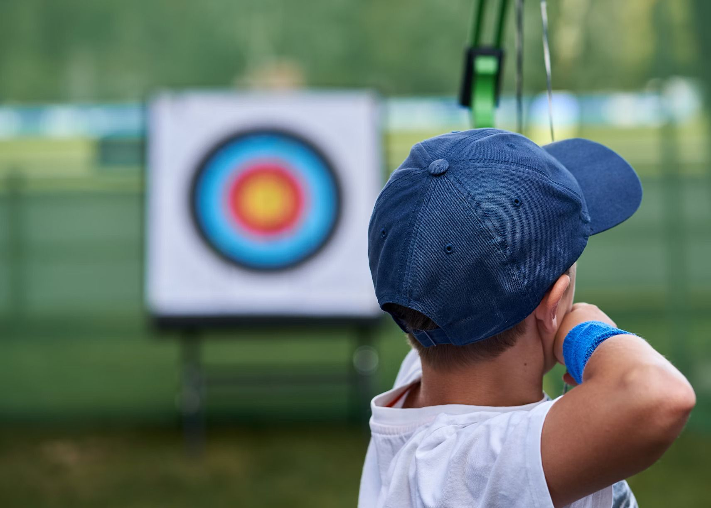
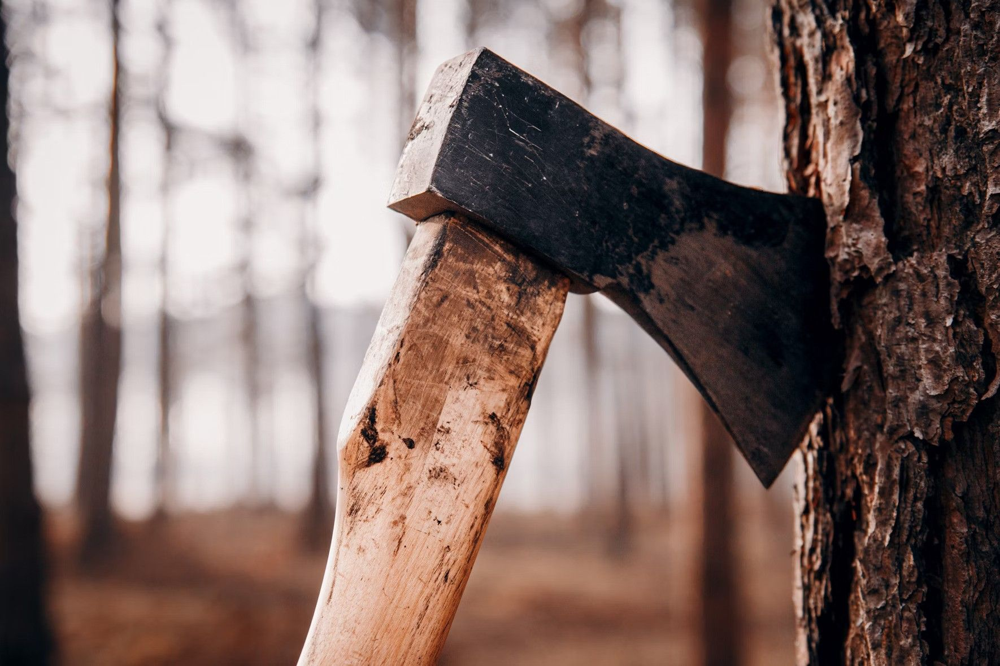

Land Based Activities
Visitors can take part in a wide range of land-based activities on and off site.
Hillwalking
From short walks around the site to Munro-bagging expeditions, Lochquarry has it all!
Walks can be tailored to suit any age or experience of groups and can last from one hour to all day adventures.
Max group size 12.
Ages 6+
Archery

Are you the next Robin Hood?
Learn to hold a bow and fire an arrow and take part in fast and fun shootout competitions.
Max group size 6.
Ages 6+
Click here for some archery tips before your visit!
Orienteering
Set in the centre’s grounds, find all the markers and make it back in time to show off your superior navigation knowledge.
Groups of 2+, one map per group.
Ages 6+
Axe Throwing
'The archery was brilliant, but not as good as axe throwing, I never thought we’d be allowed to do that! I got one of my axes right in the middle of the target’- Scott. Aged 13

Take yourself back to a time of Vikings and have a go at throwing an axe.
Try to hit the target, better yet throw yourself a bullseye.
Max group size 6.
Ages 10+
Click here to get some axe throwing tips!